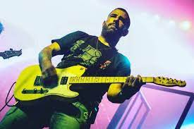
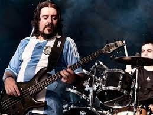
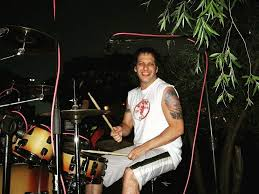
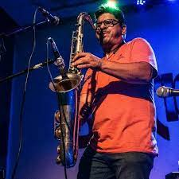

Integrantes
-
Patricio Santos Fontanet
Patricio Rogelio Santos Fontanet es un cantante, compositor y músico argentino de rock. Es conocido por haber sido el vocalista de la banda de rock Callejeros consolidada en Villa Celina, Provincia de Buenos Aires
Nacimiento: 16 de junio de 1979 (edad 42 años)
Instrumento: Voz y Guitarra
Grupos musicales: Callejeros (1995 – 2010), Don Osvaldo
-
Maximiliano Djerfy
ex guitarrista de la banda Callejeros, murió a los 46 años tras sufrir un infarto. Según trascendió, se habría descompensado mientras jugaba un partido de fútbol, el 13 de marzo de 2021
Nacimiento: en 1975
Instrumento: Guitarra
Grupo musical: Callejeros (2000 – 2008)
 -
Elio Delgado
fue guitarrista de Callejeros hasta abril de 2010, cuando fue expulsado de esa banda luego de un confuso episodio en el que murió la mujer del baterista. Delgado se dedicó de lleno a El Hito, un proyecto paralelo que venía desarrollando desde un tiempo atrás.
Nacimineto
Instrumento: Guitarra
Grupo musical: Callejeros (2001 – 2010)
-
Cristian Torrejón
el ex bajista de la banda Callejeros, recibió el beneficio de la libertad condicional en su condena por la tragedia de Cromañón, al haber cumplido la mitad de la pena en el penal de Ezeiza
Nacimiento
Instrumento: Bajo electrico
Grupo musical: Callejeros (2000 – 2008)
 -
Eduardo Vázquez
El ex baterista de la banda Callejeros Eduardo Vázquez, condenado a prisión perpetua por el femicidio de su esposa Wanda Taddei, a quien prendió fuego y asesinó hace once años,
Nacimiento: 30 de agosto de 1975 (edad 46 años)
Instrumento: Bateria
Grupo musical: Callejeros ( 1995 - 2010)
 -
Juan Carbone
Nacimiento
Instrumento: Saxofón
Grupos musicales: Callejeros (2001 – 2010), Viejas Locas (1990 – 2000)
